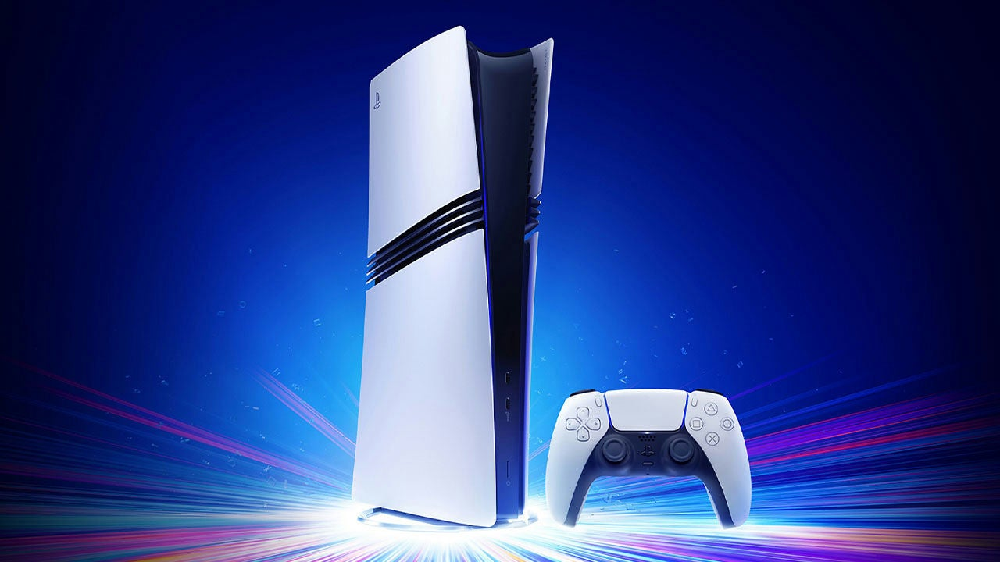
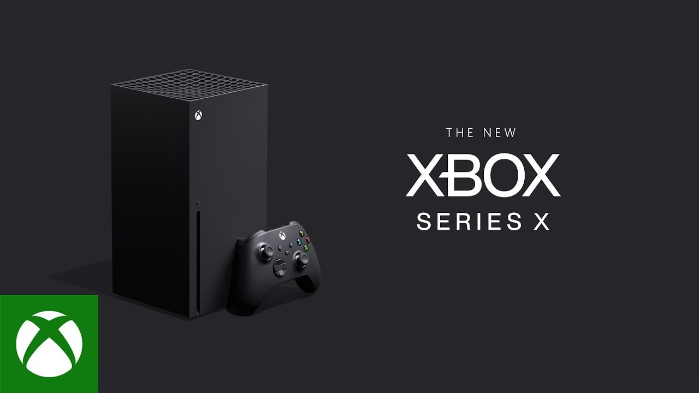

PlayStation 5
PlayStation 5 merupakan konsol generasi terbaru dari Sony yang menawarkan performa tinggi dengan grafis realistis. Konsol ini menggunakan SSD super cepat sehingga waktu loading menjadi sangat singkat.
Selain itu, PS5 dilengkapi dengan teknologi ray tracing dan controller DualSense yang memberikan pengalaman bermain lebih imersif.

Nintendo Switch 2
Nintendo Switch 2 adalah konsol hybrid yang dapat digunakan sebagai handheld maupun dihubungkan ke TV. Konsol ini terkenal dengan fleksibilitas dan game eksklusif yang menarik.
Dengan peningkatan performa dari generasi sebelumnya, Switch 2 tetap mempertahankan keunggulan portabilitasnya.

Xbox Series X
Xbox Series X adalah konsol dari Microsoft yang memiliki performa sangat tinggi dengan dukungan resolusi hingga 4K dan frame rate stabil.
Fitur unggulan seperti Game Pass memungkinkan pengguna memainkan banyak game dengan sistem berlangganan.